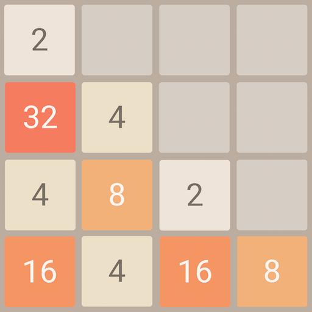
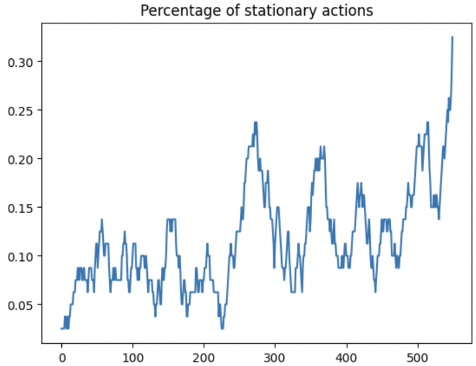
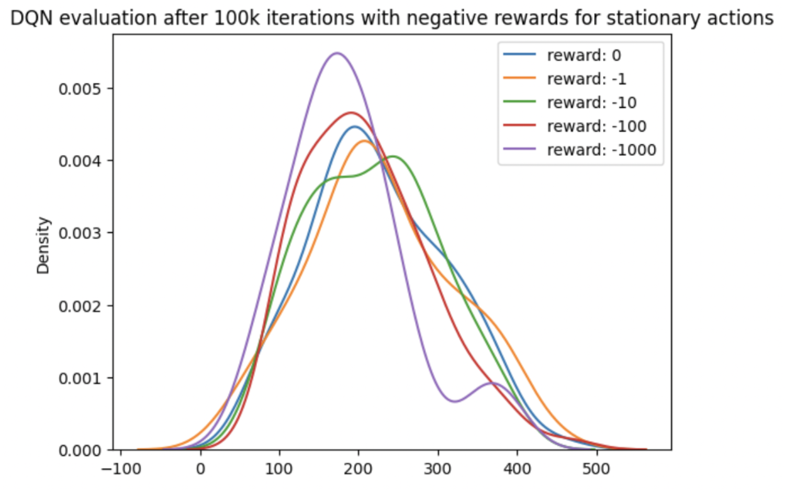
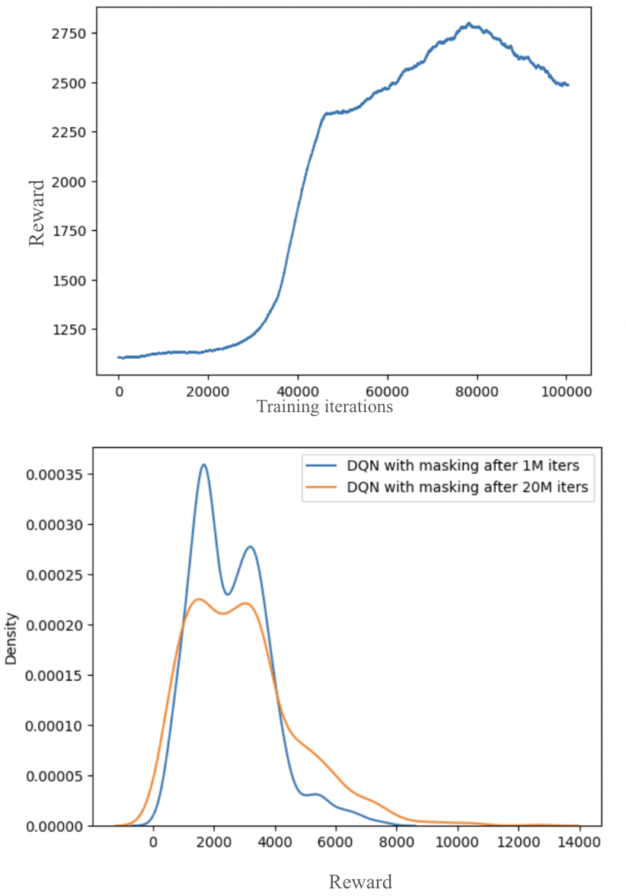

| Actions That Do Nothing: Stationary Actions as an RL Pitfall | |||
| Ali Backour and Sarah Mokhtar | |||
| May 2026 · Course project note | |||
| Actions That Do Nothing: Stationary Actions as an RL Pitfall | |||
| Ali Backour and Sarah Mokhtar | |||
| May 2026 · Course project note | |||
When building a reinforcement learning environment, it is tempting to expose a fixed action space and let the agent learn everything from rewards. In 2048, the fixed action space is tiny: up, down, left, and right. But depending on the board, some of these actions do absolutely nothing.
For example, if every row is already pushed as far left as possible and no adjacent tiles can merge, then the action left leaves the board unchanged. The environment accepts the action, but the state does not move.
This post is a short case study from a course project on RL for 2048. The goal is not to present a state-of-the-art 2048 agent. The useful lesson is narrower: stationary actions can quietly break training, and simply giving them negative reward did not fix the problem in our experiments. The cleaner solution was to mask them out.
In our 2048 environment, a state is a $4 \times 4$ board and the action set is
An action $a$ is stationary at state $s$ if taking it leaves the environment unchanged:
This is not a rare corner case. As a 2048 board fills up, it becomes more constrained: fewer directions are able to slide or merge tiles. In random play, the fraction of stationary actions tends to increase as the game progresses.


At first, stationary actions seem harmless. If an action gives no reward and changes nothing, shouldn't the agent eventually learn not to take it? In tabular RL, often yes. But with deep Q-learning, function approximation, bootstrapping, exploration, and replay buffers make the failure mode more subtle.
For a stationary action, the agent observes a transition of the form
The next state is the same as the current state. Therefore the Bellman target for a Q-learning style update bootstraps from the same state:
This creates a self-referential update. If $Q(s,a)$ for the stationary action is overestimated, the policy may choose it again. That produces another transition from $s$ back to $s$, which adds another nearly identical sample to the replay buffer. The agent can waste many updates learning from transitions that contain no new state information.
The paper version wrote the intuition using the simplified stationary-action TD update
The term $R-(1-\gamma)Q_\theta(s,a)$ is the important part. If the action is stationary, lowering its value through reward penalties requires $R$ to be sufficiently negative relative to the current value estimate. If the penalty is too small, the update may not push the action down enough. If the penalty is very large, it can dominate the loss and destabilize training.
The obvious fix is to penalize stationary actions. We tried that first. We trained DDQN while sweeping the reward for stationary actions from 0 down to -1000.
This did not cleanly solve the problem. Across the penalty sweep, the agent still struggled to learn meaningful behavior and repeatedly fell into loops of stationary actions. A random agent achieved an average score around 1000, while the unmasked DDQN variants remained poor and unstable.

The reason is that a penalty is only an indirect signal. The agent still has to explore the bad action, store the transition, and learn from the target. If the penalty is mild, the bootstrapped value can still make the action look acceptable. If the penalty is extreme, the learning signal can become harsh and unstable under function approximation.
In other words, negative rewards ask the agent to learn a fact we already know: this action cannot change the state. When the environment can compute that fact exactly, it is cleaner to remove the action from consideration.
Instead of penalizing stationary actions, we mask them. At each state, the environment computes whether each action changes the board:
For DQN, we can assign masked actions a value of $-\infty$ before choosing an action:
Then the greedy action is selected only among moves that actually change the state:
This changes the learning problem in a simple but important way. The agent no longer spends exploration or replay-buffer capacity on transitions of the form $(s,a,r,s)$ when $a$ was known in advance to do nothing. It learns among the meaningful actions available at that state.
After adding action masking, DDQN started to learn meaningful behavior. With one million iterations, the masked agent reached an average reward around 2417 in evaluation. With longer training, around twenty million iterations, this increased to about 3153.

These numbers are not meant to compete with optimized 2048 solvers. The useful empirical point is simpler: the unmasked penalty-based approach failed to produce healthy learning, while masking the stationary actions produced a much cleaner training problem.
This is a small course-project case study. We did not build a state-of-the-art 2048 solver, and the results should not be interpreted that way. The value of the experiment is diagnostic: it shows how a seemingly harmless environment design choice can make learning much harder.
The conclusion also depends on being able to identify stationary actions exactly. In 2048 that is easy: simulate the move and check whether the board changes. In other environments, invalid or useless actions may be harder to detect, and one might need to learn an action-elimination model instead.
Actions that do nothing are not always harmless. In 2048, they become more common as the board fills up, and they can create self-reinforcing loops for value-based agents. Penalizing them with negative reward was brittle in our DDQN experiments. Masking them out was the clean intervention: it removed uninformative transitions, made the action set state-dependent, and allowed learning to proceed.
The broader lesson is simple: when designing an RL environment, do not only ask what actions are syntactically allowed. Ask which actions are meaningful in the current state. If the environment knows an action cannot matter, the agent may not need to waste samples discovering that from scratch.